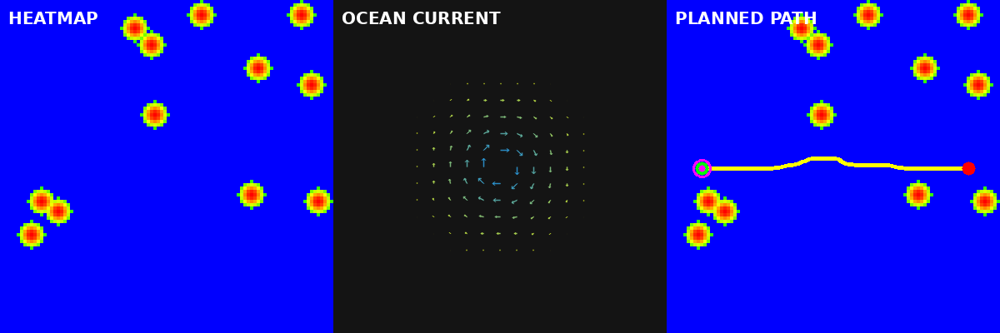

基于热力图的洋流干扰下 ROV 自适应路径规划 ROS 2 模块
1. 作业概述与背景
遥控水下机器人（ROV）在海底作业时面临两类典型导航挑战：一是海底礁石、沉船等障碍物需要规避，二是洋流会对 ROV 产生持续推力干扰，逆流航行能耗高、顺流航行易偏航。传统的全局路径规划（如纯 A*）只考虑障碍物距离，忽略了洋流的动态影响，导致规划出的路径在实际洋流中能耗大甚至无法到达。
本模块基于 OpenCV 与 A 算法实现一条"热力图 + 洋流补偿"的自适应路径规划链路：将海底环境离散化为风险热力图，用向量场建模洋流，并在 A 的代价函数中同时考虑障碍物风险、洋流推力（顺流奖励、逆流惩罚）和路径长度，从而规划出兼顾安全与节能的路径。模块附带演示节点，可自动生成海底障碍物和起终点触发规划。
2. 运行环境
- 操作系统：Ubuntu 20.04（虚拟机）
- ROS 2 版本：Humble（20.04 官方无二进制包，需按官方文档从源码编译安装）
- 依赖库：rclcpp、nav_msgs、geometry_msgs、std_msgs、sensor_msgs、cv_bridge、image_transport、OpenCV 4.x、Eigen3
- 演示动图渲染脚本依赖：python3-opencv、python3-numpy、python3-pil（由 rosdep 自动安装）
3. 核心代码文件清单
本模块包含以下核心文件，均已提交至仓库：
src/water/water_rov_path_planning/
├── include/water_rov_path_planning/
│ ├── heatmap.hpp # 热力图：参数结构与类声明
│ ├── ocean_current.hpp # 洋流场：四种模式（均匀/涡流/潮汐/剪切）
│ └── path_planner.hpp # A* 路径规划器：代价函数与平滑
├── src/
│ ├── heatmap.cpp # 障碍物风险高斯扩散实现
│ ├── ocean_current.cpp # 洋流向量场计算与可视化
│ ├── path_planner.cpp # A* + 洋流顺逆流补偿 + 加权平均平滑
│ ├── planning_node.cpp # 主节点：环境更新 + 路径规划
│ └── demo_node.cpp # 演示节点：生成障碍物与起终点
├── launch/
│ └── main.launch.py # 一键启动
├── config/
│ └── params.yaml # 参数配置
├── rviz/
│ └── path_planning.rviz # RViz2 可视化配置
├── scripts/
│ └── render_demo.py # 订阅节点输出并离线渲染演示动图
├── CMakeLists.txt
├── package.xml
├── test/
│ └── test_core.cpp # 热力图风险、顺逆流代价、平滑回退单元测试
└── README.md
4. 处理原理
4.1 热力图风险建模
将 50m×50m 海域离散化为 100×100 网格（分辨率 0.5m）。每个障碍物在其位置产生峰值风险 1.0，并按高斯函数向周围扩散：
其中 为格子到障碍物的距离（米）， 为衰减系数（默认 0.15），障碍物影响半径为 2 m。风险在 2 m 处截断：截断处风险约为 0.55，之后直接归零，因此热力图存在 0.55→0 的台阶；按风险阈值 0.7，实际封禁（不可通行）区域半径约 1.54 m。热力图风险仅由障碍物产生；洋流的影响在 A* 代价函数中单独计算，见 4.3 节。颜色映射为蓝（低风险）经绿、黄过渡到红（高风险）。
4.2 洋流场建模
支持四种洋流模式：
- 均匀流：全海域流速大小方向一致，模拟开阔海域的定向洋流。
- 涡流：以某点为中心的旋转流，流速随距离中心增大而衰减，模拟海底涡旋。
- 潮汐振荡：流速随时间正弦变化，模拟潮汐周期。
- 剪切流：流速随坐标线性变化，模拟海峡中的流速梯度；主流沿 x 方向，y 分量按 0.3 系数叠加，模拟较弱的横向次流。
4.3 自适应 A* 代价函数
A* 的每步代价由三部分加权组成，权重分别为长度 1.0、风险 5.0、洋流 3.0；顺流奖励系数 。三项权重全程无量纲，都按"单位距离代价 × 本步米数"累加，因此总代价按米制口径累计，量纲为米（数值上可与路径长度直接比较）。洋流项使用无量纲流向对齐度：
逆流（）：
顺流（）：
-
为本步移动距离（米），等于格子距离乘以
resolution； - 为目标格子的热力图风险（超过阈值 0.7 则不可通行）；
- 为该格子处的洋流速度向量（m/s）， 为本步移动方向的单位向量；
-
为参考流速（
current_ref_speed，默认 1.0 m/s）。点积 先除以 得到无量纲对齐度 ，洋流项因此也是"每米代价 × 米数"，三项权重都无量纲，总代价量纲为米；启动时校验current_magnitude ≤ current_ref_speed，保证 不被截断失真； - 顺流奖励以长度项为上限（），该上限只保证边代价不为负，并不保证边代价非零；"顺流边不为 0 代价"由启动校验 保证（默认 0.5×3.0×0.4/1.0 = 0.6 < 1.0），因此合法参数下顺流边每米代价严格大于 0；
- 横向洋流（对齐度接近 0）几乎不改变代价。
顺流奖励系数 使规划器倾向于选择顺流段，降低 ROV 推进能耗。均匀流（+x 顺流、流速 0.4 m/s）场景下每米顺流奖励 ，即每米代价 0.4，加权累计代价由零流速基线 40.00 降至 16.00，可确认该系数生效。
/path_cost 依次发布 [加权累计代价, 路径长度(m), 路径点数]，代价在路径平滑完成后基于最终路径逐段重算，与第二项的米制路径长度是同一条几何路径的两个指标，可互相印证（零流速且沿途无风险时代价恰好等于长度）。重算风险时按半格步长采样整段并取最大值，与 smoothPath 的安全校验口径一致；而 A 搜索中的 stepCost 按目标格取风险，两者采样方式不同，因此发布代价可能略大于搜索过程中累计的 g 值。规划器通过 setTime() 接收当前时间，潮汐模式下 A 代价按规划时刻的流速计算，而不是固定用 t=0。
需要说明的是，启发函数为米制欧氏距离乘以 ，与 g 值的长度项同量纲；但顺流边每米代价可低至 （远低于长度项），启发函数仍可能高估实际剩余代价，不满足可采纳性，A* 返回的是该加权代价下的近优解，不保证全局最优。另外可通行边的风险项最高为 倍距离（风险阈值 0.7）。
4.4 路径平滑与安全校验
A 输出的网格路径存在锯齿，通过 3 次 Jacobi 加权平均平滑中间点（权重 0.5、0.25、0.25），得到更连续、可执行的路径。Jacobi 更新每轮都基于上一轮的完整路径，避免第 i 个点依赖已更新的第 i-1 个点造成单向偏移。平滑后对每个点、每段中点以及段内按半格采样检查热力图风险，一旦超过 max_risk_threshold 就整条回退到 A 原始路径，保证平滑不会把路径推进封禁区，也不会让长线段在中间跨过风险区。
另外，A* 的对角移动要求两个正交邻居格子都可通行，避免路径贴着封禁格拐角斜穿过去。
5. 运行步骤
- 新建标准工作空间并进入 src 目录：
mkdir -p ~/ros2_ws/src
cd ~/ros2_ws/src
- 从 ros2 仓库拷贝模块代码到工作空间：
cp -r ~/ros2/src/water/water_rov_path_planning ~/ros2_ws/src/
cd ~/ros2_ws
- 安装依赖并编译工作空间、部署环境：
rosdep install --from-paths src --ignore-src -r -y
colcon build --packages-select water_rov_path_planning
source install/setup.bash
若系统存在多个 OpenCV 版本导致找不到 OpenCV 配置，编译时显式指定：
colcon build --packages-select water_rov_path_planning --cmake-args -DOpenCV_DIR=/usr/lib/x86_64-linux-gnu/cmake/opencv4
- 启动演示节点（自动生成 12 个障碍物 + 起点终点 + 路径规划）：
ros2 launch water_rov_path_planning main.launch.py
参数只在 config/params.yaml 定义一处，launch 只加载该文件、不再硬编码覆盖；需要临时改洋流模式时，修改 yaml 后重启，或按第 7 节用 --ros-args -p 单独启动节点。
- 另开终端查看路径代价与规划结果：
source install/setup.bash
ros2 topic echo /path_cost
ros2 topic echo /planned_path
- 可选：打开 RViz2 查看热力图、洋流场与规划路径：
ros2 run rviz2 rviz2 -d install/water_rov_path_planning/share/water_rov_path_planning/rviz/path_planning.rviz
6. 话题与参数
| 话题 | 类型 | 方向 | 说明 |
|---|---|---|---|
/obstacle |
geometry_msgs/PointStamped |
输入 | 障碍物位置（米） |
/start |
geometry_msgs/PointStamped |
输入 | 起点位置 |
/goal |
geometry_msgs/PointStamped |
输入 | 终点位置（触发规划） |
/planned_path |
nav_msgs/Path |
输出 | 规划路径 |
/heatmap |
sensor_msgs/Image |
输出 | 热力图可视化（蓝=安全，红=危险） |
/ocean_current |
sensor_msgs/Image |
输出 | 洋流场向量图 |
/path_cost |
std_msgs/Float32MultiArray |
输出 | [加权累计代价, 路径长度(m), 路径点数]，代价与长度均为平滑后最终路径的指标 |
话题使用相对名（代码中不带前导 /），默认解析到根命名空间，demo_node 与 planning_node 因此共享同一组名字；用 __ns 加命名空间后可在同机并行运行多组实例，互不抢占。
| 参数 | 默认值 | 说明 |
|---|---|---|
grid_size |
100 | 热力图网格边长（格子数） |
resolution |
0.5 | 每个格子对应实际尺寸（米） |
obstacle_radius |
2.0 | 障碍物影响半径（米） |
risk_decay |
0.15 | 风险高斯衰减系数 α |
risk_weight |
5.0 | 热力图风险权重（须 ≥ 0） |
current_weight |
3.0 | 洋流权重（须 ≥ 0，作用于无量纲对齐度 (û·v)/current_ref_speed） |
current_compensation |
0.5 | 顺流奖励系数 k（0～1，且须 k·w_c·magnitude/v_ref < length_weight，保证顺流边代价不为 0） |
current_ref_speed |
1.0 | 参考流速（m/s），把 û·v 归一化到无量纲 |
length_weight |
1.0 | 路径长度权重 |
max_iterations |
100000 | A* 最大迭代次数 |
max_risk_threshold |
0.7 | 风险阈值，超过则不可通行 |
current_pattern |
vortex | 洋流模式（uniform/vortex/tidal/shear，非法值报错退出） |
current_magnitude |
0.4 | 基础洋流流速（m/s，须 ≤ current_ref_speed） |
current_direction |
0.0 | 均匀流方向（弧度，须满足 |current_direction| ≤ 2π） |
vortex_x / vortex_y |
25.0 / 25.0 | 涡流中心坐标（米，须落在 [0, grid_size×resolution] 内） |
vortex_radius |
15.0 | 涡流影响半径（米） |
tidal_period |
60.0 | 潮汐周期（秒） |
演示节点参数：
| 参数 | 默认值 | 说明 |
|---|---|---|
world_size |
50.0 | 海域边长（米） |
num_obstacles |
12 | 随机障碍物数量 |
obstacle_seed |
42 | 障碍物随机种子 |
start_x / start_y |
5.0 / 25.0 | 起点坐标（米，须 ≥ 0 且 < world_size） |
goal_x / goal_y |
45.0 / 25.0 | 终点坐标（米，须 ≥ 0 且 < world_size） |
以上两组参数都只在 config/params.yaml 的 rov_planning_node / rov_demo_node 段定义一处，launch 仅加载该文件。非法参数（grid_size<=1、resolution<=0、current_magnitude<0、current_magnitude>current_ref_speed、current_ref_speed<=0、risk_weight<0、current_weight<0、current_compensation 不在 [0,1]、|current_direction|>2π、涡流中心不在 [0, grid_size*resolution] 内、k*w_c*magnitude/v_ref >= length_weight、length_weight<=0、max_iterations<=0、vortex_radius<=0、tidal_period<=0、num_obstacles<0、world_size<=4、world_size 与 grid_size*resolution 不一致、非法 current_pattern、起终点越界等）会在启动时报错并以非零退出码结束，避免除零或未定义行为。
7. 运行效果
默认参数下，演示节点在 50m×50m 海域内随机生成 12 个障碍物，起点 (5, 25)、终点 (45, 25)，洋流模式为涡流（中心 (25, 25)，半径 15m，基础流速 0.4 m/s）。规划器输出的路径会：
- 绕开风险超过阈值 0.7 的区域（热力图红色核心），障碍物所在格子完全不可通行，风险低于阈值的过渡带允许通行；
- 路径总长度略长于直线距离。
需要说明的是，涡流场景下直线路径的洋流项净贡献很小：起点与终点都沿 y=25 布置，而涡流中心位于 (25, 25)，该直线上各格子的切向速度沿 ±y 方向，与 +x 的移动方向对齐度约等于 0。但规划器会主动偏离直线去利用涡流场中的顺流段：最终路径长度 40.48 m，略长于直线 40.00 m，加权累计代价 37.25，低于零流速基线 40.00，差值 −2.75 即顺流段带来的净收益。
在虚拟机上以默认参数（grid_size 100、resolution 0.5、涡流模式、基础流速 0.4 m/s、参考流速 1.0 m/s、障碍物种子 42、起点 (5, 25)、终点 (45, 25)）启动后连续运行，规划器输出稳定在：路径点数 81，路径长度 40.48 m，加权累计代价 37.25。演示节点在订阅匹配后触发规划，之后每 5 秒重规划一次，由于环境静态，多次规划结果一致。
若要验证洋流补偿本身，可将洋流改为与路径同向的均匀流。参数不在 launch 中重复定义，临时验证时用 --ros-args -p 覆盖即可：
source install/setup.bash
# 终端 1：演示节点
ros2 run water_rov_path_planning demo_node
# 终端 2：规划节点，参数文件提供默认值，CLI 只覆盖洋流三项
ros2 run water_rov_path_planning planning_node --ros-args \
--params-file install/water_rov_path_planning/share/water_rov_path_planning/config/params.yaml \
-p current_pattern:=uniform -p current_magnitude:=0.4 -p current_direction:=0.0
此时 +x 方向的每一步都是顺流，加权累计代价会明显低于默认涡流场景。上述配置只改变代价数值，路径形状不变，因为均匀流在整个海域方向一致，不存在可绕行的低阻区域。
| 场景 | 路径点数 | 路径长度 | 加权累计代价 |
|---|---|---|---|
| 涡流（默认） | 81 | 40.48 m | 37.25 |
| 均匀流（+x 顺流） | 81 | 40.00 m | 16.00 |
| 零流速基线（magnitude = 0） | 81 | 40.00 m | 40.00 |
均匀流场景下加权累计代价由零点基线 40.00 降至 16.00：每米顺流奖励 ，即每米代价 0.4，40 m 共 16.0，洋流补偿项在该场景下确实生效；两种场景的路径形状相同，因为障碍物分布与起终点不变。零流速场景沿途风险为 0，代价恰好等于路径长度，也印证了代价与长度是同一条平滑后路径的两个指标。

上图为节点实际输出数据经 scripts/render_demo.py 离线渲染的三联对比动图（非 RViz 截图）：左侧 HEATMAP 为热力图（蓝=安全，红=危险），中间 OCEAN CURRENT 为洋流场向量图，右侧 PLANNED PATH 为叠加在热力图上的规划路径（黄色折线，绿色起点，红色终点）。复现方式：保持
ros2 launch water_rov_path_planning main.launch.py运行（demo_node 与 planning_node 均在发布/heatmap、/ocean_current、/planned_path），另开终端执行source install/setup.bash && ros2 run water_rov_path_planning render_demo.py，脚本收齐三个话题后渲染 24 帧并输出到~/demo_rov_path_planning.gif。
8. 验证范围说明
本模块已在虚拟机上完成以下验证：节点正常启动、话题正常收发、热力图随障碍物添加正确更新、洋流场可视化正常输出、A 在有障碍物和洋流的环境下成功规划出避开高风险区的路径、路径平滑后无明显锯齿。平滑改为 Jacobi 后增加了逐点、逐段中点及段内半格采样的风险校验，超阈值会回退到 A 原始路径；对角移动要求两个正交邻居可通行，避免贴着封禁格切角。演示节点在发布障碍物后等待一张时间戳更新的热力图再发终点，避免 goal 先于 obstacle 到达。
仓库新增 test/test_core.cpp，用 gtest 覆盖热力图风险衰减（r = 0、1.5、2.0、2.5 m）、坐标边界（负坐标与恰好在地图边上的坐标均判越界）、潮汐相位、顺流/横向/逆流三种代价关系、顺流奖励以长度项为上限（强顺流边代价为 0 而非负数）、参考流速归一化以及平滑风险回退（含长段内部风险采样），可用 colcon test --packages-select water_rov_path_planning 运行。
当前版本使用合成演示数据（随机障碍物 + 解析洋流场），尚未接入真实海底声呐或多波束数据；洋流场为稳态解析模型，未考虑时间动态变化（潮汐模式有周期变化但未做实测验证）；路径规划为全局一次性规划，未实现随洋流变化的动态重规划（演示节点 5 秒后会触发一次重规划作为示意）。
大模型使用声明
本模块代码与文档由大模型辅助生成，作者已在 Ubuntu 20.04 + ROS 2 Humble 虚拟机中实际运行验证，作者对提交内容负责。